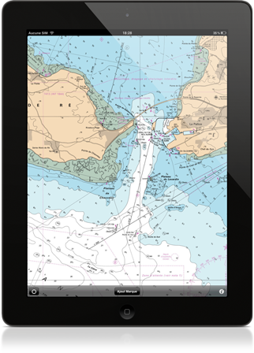

{% if site.app_published %}
{% else %}
{% endif %}
{% if site.app_published == false %}
Bientôt disponible sur l'App Store
Restez en contact !
Pour être informé lorsque l'application sera disponible, cliquez ici pour laisser votre email
{% endif %}